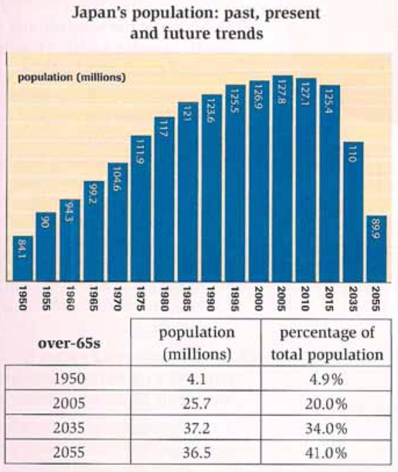

You should spend about 20 minutes on this task.
The chart and table below give information about population figures in Japan.
Summarise the information by selecting and reporting the main features and make comparisons where relevant.
Write at least 150 words.

The table and chart provide information regarding population growth and the proportion of the population over 65 over a 100-year period in Japan.
According to the information. Japan's general population figures in 1950 were very different from those in 2005 and future predictions show even greater differences. In 1950, the number of people was just over 84 million, and only 4.9 percent (4.1 million) of these people were above the age of 65. By 2005, the percentage of older people had risen considerably to 20 percent, while the overall population had shown a parallel increase to nearly 128 million. However, total population figures peaked in 2005. and if is expected that the number of people living in Japan will fall substantially over the next 50 years to a little below 90 million. In spite of this fall, the rise in the ageing population will continue, and at a faster rate, so that by 2055, 41 percent (36.5 million) of Japanese people will be over 65.
These statistics show two contrasting trends in Japan's demographics that will result in fewer citizens, but greater numbers of elderly people.
(193 words, band 9)
You should spend about 40 minutes on this task.
Write about the following topic.
Psychologists have known for many years that colour can affect how people feel. For this reason, attention should be given to colour schemes when decorating places such as offices and hospitals.
How true is this statement?
How far does colour influence people’s health and capacity for work?
Give reasons for your answer and include any relevant examples from your own knowledge or experience.
Write at least 250 words.
Colour is arguably one of the earliest things that we learn about. As we grow up. we develop preferences for colour, and these are shown in the decoration of our homes, the products we buy and the clothes we wear. As colour plays such a huge role in our domestic lives, it is inevitable that it will also affect now we feel outside of the home, particularly in places such as hospitals and offices.
As a matter of fact, businesses have been aware of the impact of colour on employees for some time. The general view has been that if you work in an office that has roo many colours and patterns on the walls, you will end up finding it hard to concentrate Visitors may also be too taken up with the colours around them to focus on what they are doing interestingly, however, there are some office areas that suit bright colours. For example, creative people often say They can carry out their work better if a room is painted in bold colours, in my university in Thailand, the creative room was painted entirely in yellow to inspire its users to come up with exciting and novel ideas. Students commented that they felt more energised in this type of environment While work is about output, hospitals are about the health of patients. Clearly, bright colours would be less welcome on a hospital ward, where patients are trying to recover from operations and illnesses- Here, relaxing shades are needed, such as pastels.
Having said that, some hospital areas are the opposite. Unlike adults, children need some form of entertainment, and walls painted in bright reds and oranges with pictures and posters can achieve that. Similarly, doctors and nurses might welcome brighter surroundings when they are taking a break from work. As far as t am concerned, there is a direct link between colour and mood. This means that designers should think about who will occupy a building, and decorate its rooms in such a way that the occupants are able to get the best out of their surroundings.